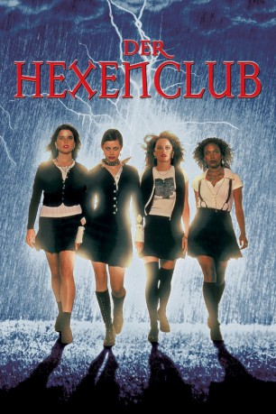

#8670 Der Hexenclub
Alternativ: The Craft
 
 IMDB-Wertung: 6.3 / 10
IMDB-Wertung: 6.3 / 10  Metascore: 0
Metascore: 0 
Wer glaubt, Hexen seien alt und häßlich, kennt Sarah, Nancy, Bonnie und Rochelle noch nicht. Die attraktiven High School Girls gründen einen Hexenzirkel, mitten in Los Angeles - ausgerechnet an der katholischen St. Benedict’s Academy. Die Magie bringt ihnen Spaß und erfüllt ihre sehnsüchtigsten Wünsche auf geheimnisvolle Weise. Doch nicht ohne Folgen, denn sie haben eines übersehen: "Was immer Du aussendest, bekommst Du dreifach zurück". Das macht die smarten Hexen für andere lebensgefährlich: Wer sie ärgert, wird verwünscht! Ihre Rache ist eiskalt und das Unglück nimmt seinen unbarmherzigen Lauf...
Jahr: 1996
Dauer: 100 Minuten
FSK: 16
Land: USA Studio: Columbia PicturesTonspuren: DTS - ,
Untertitel: Deutsch,
Auflösung: 1080p (1920x1040) Größe: 7884 MB
Genre: Thriller, Horror, Drama, Fantasy
Regisseur: Andrew Fleming
Drehbuch: Peter Filardi
Soundtrack: Graeme Revell
Darsteller:
- Robin Tunney als Sarah Bailey
 Fairuza Balk als Nancy Downs
Fairuza Balk als Nancy Downs Neve Campbell als Bonnie
Neve Campbell als Bonnie- Rachel True als Rochelle
 Skeet Ulrich als Chris Hooker
Skeet Ulrich als Chris Hooker Christine Taylor als Laura Lizzie
Christine Taylor als Laura Lizzie Breckin Meyer als Mitt
Breckin Meyer als Mitt- Nathaniel Marston als Trey
 Cliff De Young als Mr. Bailey
Cliff De Young als Mr. Bailey- Assumpta Serna als Lirio
- Helen Shaver als Grace Downs
 Jeanine Jackson als Jenny
Jeanine Jackson als Jenny Brenda Strong als Doctor
Brenda Strong als Doctor Arthur Senzy als Vagrant
Arthur Senzy als Vagrant Endre Hules als Monsieur Thepot
Endre Hules als Monsieur Thepot William Newman als Street Preacher
William Newman als Street Preacher- Rod Britt als Priest
 Tony Genaro als Bus Driver
Tony Genaro als Bus Driver- Janet Rotblatt als Homeroom Teacher
- Esther Scott als Asylum Nurse
- Holly Marie Combs als Tasha Powell (uncredited)
- Christian Greenia als Student (uncredited)
 John Kapelos als Ray (uncredited)
John Kapelos als Ray (uncredited)- Kathleen Lloyd als Bonnie's Mother (uncredited)
- Darin Mangan als Student (uncredited)
- Chantay Nieber als Laura's Friend (uncredited)
- Elizabeth Guber als Laura's Friend
- Jennifer Greenhut als Laura's Friend
- Mark Conlon als Swimming Coach
- Christine Louise Mills als Stewardess
- Erin Tavin als Homeless Mother
- Brogan Roche als Insurance Man
- Rebecca McLaughlin als Biology Teacher
- Jason Filardi als Paramedic
- Karyn J. Dean als Whispering Girl
- Danielle Koenig als Whispering Girl
- Janet Eilber als Sarah's Mother
- Glory Fioramonti als Red-Haired Woman in Car (uncredited)
- Gloria Koehn Straube als Student (uncredited)
Datei: X:\1996\Hexenclub, Der (1996, FSK16, 1920x1040).mkv seit 20.04.2018
Festplatte: HD 1996-2002
 Es gibt insgesamt 78 Filme in der Gruppe '1996'
Es gibt insgesamt 78 Filme in der Gruppe '1996'